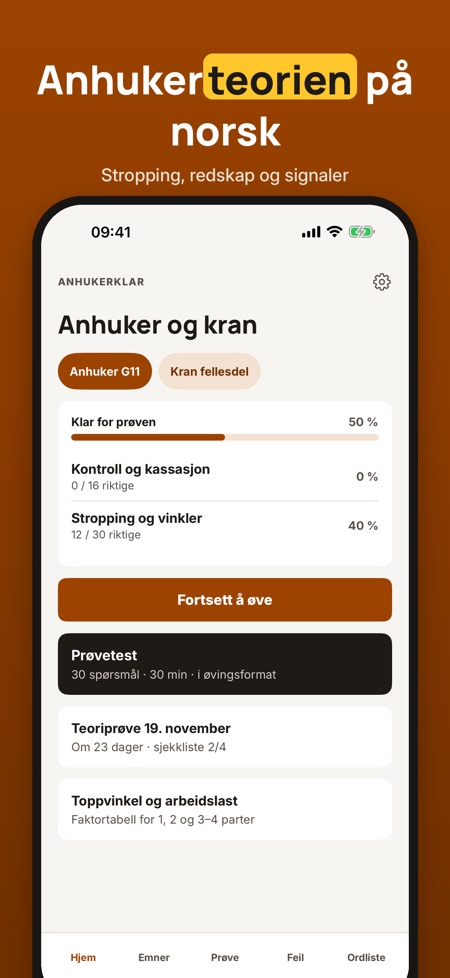
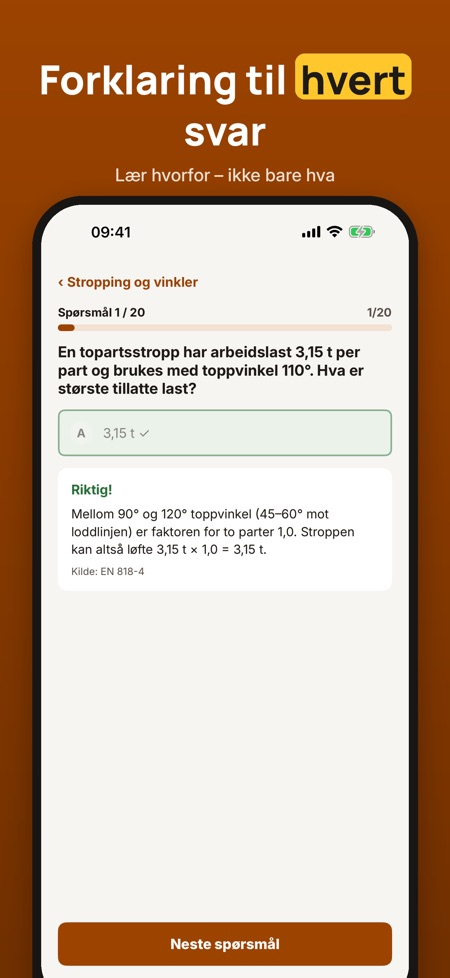
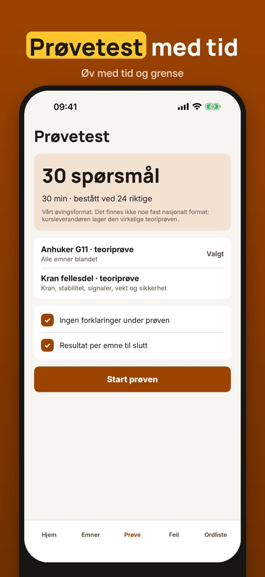

Anhukerklar hjelper deg å øve teorien til anhukeropplæringen (G11) og fellesdelen for kran: stropping, løfteredskap, signaler og sikkerhet. Alt på norsk og uten nett.



Teorien til anhukeropplæringen (G11) og fellesdelen for kran: stropping, løfteredskap, signaler og sikkerhet.
Appen har en tabell med faktorene for 1, 2 og 3–4 parter, slik at du ser sammenhengen mellom toppvinkel og arbeidslast på ett sted.
Ja, du kan øve uten nett.
Du kan øve på 20 spørsmål, ordlisten og sjekklisten uten kjøp.
Nei. Fullversjonen er et engangskjøp som låser opp alle spørsmål, prøvetester og statistikk.
Nei. Appen er uavhengig og ikke tilknyttet Arbeidstilsynet eller noen kursleverandør. Kompetansebevis får du hos en godkjent opplæringsvirksomhet.
Ja, en ordliste med de viktigste begrepene følger med.
Anhukerklar hjelper deg å øve teorien til anhukeropplæringen (G11) og fellesdelen for kran – stropping, løfteredskap, signaler og sikkerhet.
Du kan øve på 20 spørsmål, ordlisten og sjekklisten uten kjøp. Fullversjonen er et engangskjøp som låser opp alle spørsmål, prøvetester og statistikk. Ingen abonnement.
Anhukerklar er uavhengig og ikke tilknyttet Arbeidstilsynet eller noen kursleverandør. Kompetansebevis får du hos en godkjent opplæringsvirksomhet.